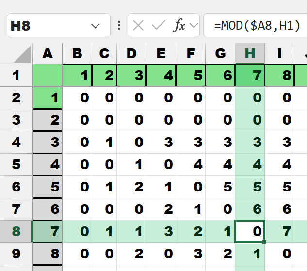
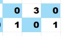
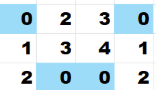
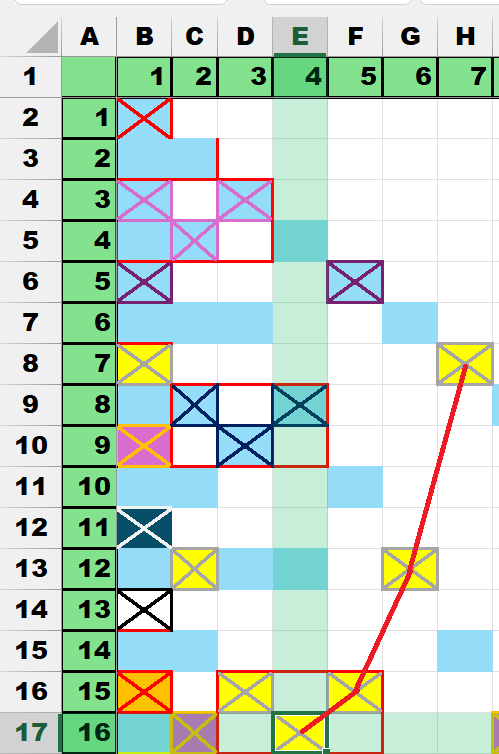

Start with a blank XLS file.
Add numbers in the first row and the left column,
Color and format the numbers , so they stand out.
Insert a formula to calculate the mod() function of the top row and the left column.
Column A and row 1.
Below is a close up of the mod() formula.
The cell H8 is highlighted , look at the row and the column values both are seven.
Note in the row only two cells , under column values of { 1 , 7 } have a zero result.
The rest have a integer value , this signifies no factor.

With conditional formatting , if the value is of a cell is zero , paint the cell blue.
This is a easy flag to find and the see value locations that are factors.
There are several patterns that can be seen.
First , is the diagonal , this is the square of two numbers.
Second , and most important by color , there are two secondary patterns.
An odd pattern.

An even pattern.

Here are the two patterns highlighted by the red boxes.
Call one box 'odd' and the other 'even' because of the number of colored cells.
Some additional clean up of values to the right of the diagonal.
Bring back the 'odd' and 'even' red boxes.
Here is the crux of the argument , eliminate the values in the cells and keep just the formats to create a clearer view.
The blue cells are factors of the row and column. The red boxes delineate 'odd' or 'even' patterns.
The patterns become clearer.
This chart shows additional coloring to trace how the diagonal is crossed by each 'odd' box.
There is a lot going on here , lets trace one grouping.

The cell E17 is the focus. First , it is column E and a value of four (4).
Second , the row is 17 and a value of sixteen (16).
16 is the square of 4.
Follow the red line as it travels up and to the right.
a) (+1,-1)
b) (+1,-3)
c) (+1,-5) , where it intersects the diagonal , the squared line.
The intersection is at (7,7) another square.
Opposite is the mirror image of similar colored cells. Making a parabola.
Each cell ends as an odd number ; (x,odd).
The next question is: where are all of the numbers ?
The vertex is (4,16) ; x = 4 , y = x^2.
The intersection with the diagonal is (7,7) ; 2x - 1 = 7
Take x , double it ; subtract 1 is always the diagonal intersection.
Also , the value of the last rise is 5. The last rise is two less than the intersection values. Here , 7 and then 5
The total rises are 9 ( 1 + 3 + 5 )
Looking manually at several of the 'odd' data points , several formulas can be derived. All of these are for the 'odd' block. A single cell at the vertex.
The observed values lead to the formulas , note the color change in the headings.
The x value moves one column to the right.
The y value is x^2.
The key is: where does the diagonal get crossed ?
Call this cross.
Take x , double it and subtract one.
The formula is: = 2x - 1.
In (x,y) coordinates: (2x-1 , 2x-1)
Next , what is the total rise to get from the vertex to the diagonal ?
Take x , subtract 1 and square that result.
The formula is: = (x - 1)^2.
Finally , how to calculate the last rise ?
Take x , double it and subtract three.
The formula is: = 2x - 3.
The last rise is the value assigned as a label on the crossing point. All the labels are separated by two. The rise label matches the value of the odd count down the diagonal. The last rise is x plus 1.
It is the formula: cross x value - 2.
or , = 2x -3.
All values are separated by 2 ; the cross value label = the last rise value.
The final count is: What is the total number of rises ?
The total number of rises is one less than x. Call it 'count rises'.
It is the formula: = x - 1.
Here is the focus on one x value.
x = 4
y = 16 ; y = x^2
The point (4,16)
The cross (7,7) ; (2x-1,2x-1)
The cross label = 5 ; 2x-3
The rise values:
The last rise = 5 ; 2x-3
The rise counts = 3 ; x-1
The sum of the rises = 9 ; 2x+1
Next , on to the 'even' parabola ; where two cells are shared near the vertex.
The red box is now drawn around the area where two cells are joined. This is 'even'.
Similar to 'odd' the same methods will be executed against the 'even' data.
The counts have been added to the diagonal at the cross.
The red lines have been added to show the track of the parabolas.
Looking manually at several of the 'even' data points , several formulas can be
derived. All of these are for the 'even' block. A pair of cells near the vertex.
The observed values lead to the formulas , note the color change in the headings.
The x value moves one column to the right each time ,
but always focuses on the left hand colored cell.
The y value is below the pair of cells , and is located at the
midpoint of the two cells. It is an invisable point below the pair.
It's point is:
((x + .5) , (x^2 + x) +1 ).
let x = 1 , y = 1 + 1 + 1 = 3
let x = 2 , y = 4 + 2 + 1 = 7
let x = 3 , y = 9 + 3 + 1 = 13
let x = 4 , y = 16 + 4 + 1 = 21
let x = 5 , y = 25 + 5 + 1 = 31
let x = 6 , Y = 36 + 6 + 1 = 43
let x = 7 , Y = 49 + 7 + 1 = 57
let x = 8 , Y = 64 + 8 + 1 = 73
let x = 9 , Y = 81 + 9 + 1 = 91
let x = 10 , Y = 100 + 10 + 1 = 111
Notice the pattern between the totals.
It is the series:
{+4, +6, +8, +10, +12, +14, +16, . . . }
The key is: where does the diagonal get crossed ?
Call this cross.
Take x , double it.
The formula is: = 2x.
In (x,y) coordinates: (2x , 2x)
Next , what is the total rise to get from the pair , just above the vertex , to the diagonal ?
Take x , square it and subtract x.
The formula is: = x^2 - x.
Finally , how to calculate the last rise ?
Take x , double it and subtract two.
The formula is: = 2x - 2.
The last rise is the value assigned as a label on the crossing point.
All the labels are separated by two.
The rise label matches the value of the even count down the diagonal minus two.
The last rise is is double x and subtract two.
It is the formula: = 2x - 2.
All values are separated by 2 ; the cross value label = the last rise value.
The final count is: What is the total number of rises ?
The total number of rises is one less than x. Call it 'count rises'.
It is the formula: = x - 1.
Here is the focus on one x value.
____________________
This is an important point: picking any x ; and that x generates both the 'odd' and 'even' parabola data simultaneously.
____________________
x = 4 ; this is the same value as used in the 'odd'.
y = 20 ; y = x^2 + x
The point (4,20)
The cross (8,8) ; (2x,2x)
The cross label = 6 ; 2x-2
The rise values:
The last rise = 6 ; 2x-2
The rise counts = 3 ; x-1
The sum of the rises = 12 ; x^2-x
The vertex is hidden because it is a decimal number for the x.
This is a quick recap of the 'odd'.
This is a quick recap of the 'even'.
Each set of 'odd' and 'even' by (x,y) coordinates sets up an area.
There are four areas painted ; the left two are 'odd' , the right two are 'even'. All are based on x = 4.
The first area (odd) is the (x,y) of (4,16) area = 64 ; and the cross of (7,7) area = 49.
The right two the area (even) of (4,20) area = 80 ; and the cross of (8,8) area = 64
What is the relationship between these areas and the next x , or previous x ?
This is the 'odd' data , the area of the original (x,y) and the cross point are in the gray columns. The data points are in the white background , and multiplied to make the total value of the areas.
In column K , subtract (original - cross) (area1 - area2) areas. This is he first difference (diff).
Next is the fun math.
Take the current row value and subtract the previous row value. Do this for diff2 and diff3.
Recursive type math.
'diff last' the answer is six (6). I believe the non six numbers are because we are not going negative on x {0 , -1 , -2 , ...}
I truly do not know how this works , someone else can figure out the f(x) for it.
This is the 'even' data , the area of the original (x,y) and the cross point are in the gray columns. The data points are in white background , and multiplied to make sum of the areas.
It is all the same ; the answer is six.
My belief is all the prime numbers are separated by six. And , this drives these answers . . .
R = { 1 , 7 , 13 , 19 }
L = { 11 , 17 , 23 , 29 }
This is the calculation step by step to get the 'diff last'. The math moves to the right in each next box.
Box 1 , calculate the two areas.
Box 2 , make first 'diff' subtract area2 from area1.
Box 3 , make 'diff2' subtract the current row from the previous row.
Box 4 , make 'diff3' subtract the current row from the previous row.
Box 5 , make 'diff last' subtract the current row from the previous row.
24
25
26
27
28
29
30